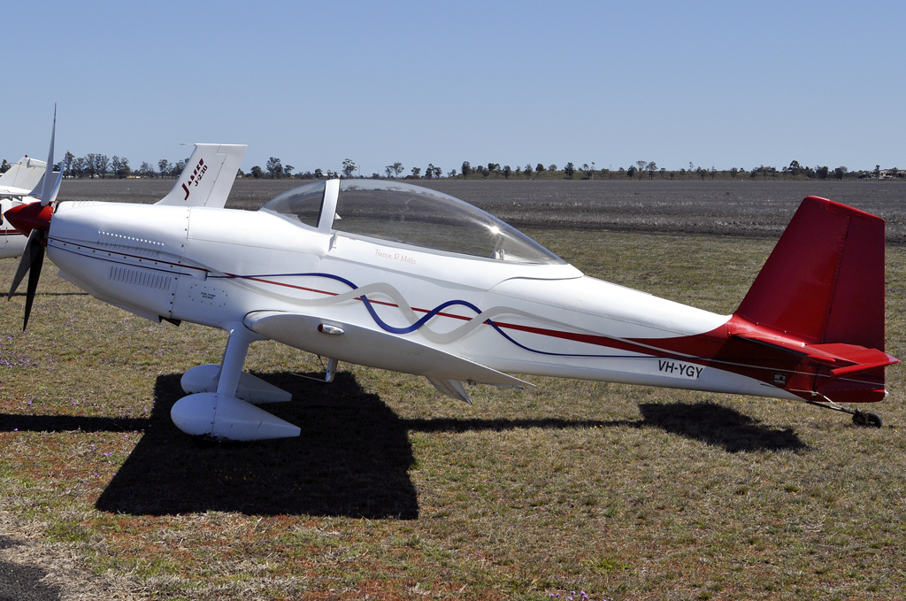

I am building a Van's RV-8, a small, fully aerobatic, two-seat experimental aircraft, in my garage in Cupertino, California. This site is a chronicle of that build: the work, the mistakes, the lessons, and the progress.
The RV-8 is a tandem-seat, tailwheel aircraft designed by Richard VanGrunsven. It is offered as a kit with thousands of parts, blueprint drawings, and assembly instructions. You build it yourself.

Van's RV-8 interior layout. Drawing from Van's Aircraft.

A completed Van's RV-8. Photo by Robert Frola, GFDL, via Wikimedia Commons.
Recent Posts
- May 7, 2026 Before 2026: Learning to Fly Flying & Social
- May 4, 2026 Building with an AI Co-Builder Research & Education
- May 2, 2026 In Pursuit of a Primer Research & Education
- March 25, 2026 Attended Fiberglass Workshop Research & Education
- February 19, 2026 Back to Building! Planning
- March 19, 2022 Horizontal Stabilizer: Update 2 Empennage
About This Project
While living in the United States, I picked up what I can only describe as a very American habit: building an airplane in the garage. In America, building your own aircraft is a normal thing to do. There are EAA chapters in every state, a long tradition of homebuilders, and a culture of people who simply decide to build something that flies.
This project touches on aviation, manufacturing, geography, and the idea that an individual with enough time and determination can build and fly their own machine. Read more →
About This Site
This site was crafted in HTML and CSS in April 2026, with no WordPress, no framework, no JavaScript. It is intentionally simple, fast, and permanent. The design draws inspiration from the personal websites of the 1990s and 2000s: the era when builders, hobbyists, and enthusiasts published their projects on the open web with nothing but a text editor and a dial-up connection. That spirit feels right for a homebuilt aircraft project.
The site is hosted on GitHub Pages. Source code is available at github.com/bibrakc/uran-khatola-factory.
Built with assistance from Kiro AI.